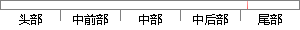

管理歌单功能 点击添加按钮，选择并点击需要添加到的歌单 歌曲被添加到想要添加到的歌单，如果已存在，则会提示“歌曲已存在”。
片段位置图

相似结果|
1
原句片段：管理歌单功能 点击添加按钮，选择并点击需要添加到的歌单 歌曲被添加到想要添加到的歌单，如果已存在，则会提示“歌曲已存在”。
相似片段 1：这就需要用到百度音乐自建歌单这个功能了,可能有的...,选择好你想要添加到这个歌单中的音乐,就点击该歌曲...添加好这个歌单中的音乐以后,就点击添加这个按钮,如...
相似片段 2：QQ音乐本地歌曲如何添加收藏?本地歌曲支持收藏,SD卡歌曲,轻松添加到歌单,更沉浸...选择需要分享的歌单进入4.点击右上角的【分享】按钮 5.选择需要分享到的平台,...
|
※ 片段修改建议 ※
近似词参考：- 管理：办理 经管 治理
- 功能：功效
- 需要：必要
- 如果：若是 假如 要是
- 提示：提醒
系统自动生成语句：办理歌单功效 点击添加按钮，选择并点击必要添加到的歌单 歌曲被添加到想要添加到的歌单，若是已存在，则会提醒“歌曲已存在”。
注：本片段修改建议为系统自动生成，仅供参考。